分類問題 - 機械学習ライブラリ sckit-learn の活用¶
3.2 scikit-learn 活用へのファーストステップ¶
3.2.1 scikit-learn を使ったパーセプトロンのトレーニング¶
Iris データセットを使ってパーセプトロンモデルをトレーニングする
In [1]:
from sklearn import datasets
import numpy
# load iris dataset
iris = datasets.load_iris()
# use features in column 3, 4
X = iris.data[:, [2, 3]]
# get class labels
y = iris.target
In [2]:
# Class labels
numpy.unique(y)
Out[2]:
array([0, 1, 2])
交差検定を行うために、データセットを分割する
In [3]:
from sklearn.model_selection import train_test_split
X_train, X_test, y_train, y_test = train_test_split(
X, y, test_size=0.3, random_state=0)
特徴量を標準化する
In [4]:
from sklearn.preprocessing import StandardScaler
sc = StandardScaler()
# calculate mean and standard deviation
sc.fit(X_train)
# standardization
X_train_std = sc.transform(X_train)
X_test_std = sc.transform(X_test)
In [5]:
sc.mean_, sc.scale_
Out[5]:
(array([ 3.82857143, 1.22666667]), array([ 1.79595918, 0.77769705]))
パーセプトロンを学習させる
In [6]:
from sklearn.linear_model import Perceptron
ppn = Perceptron(n_iter=40, eta0=0.1, random_state=0, shuffle=True)
ppn.fit(X_train_std, y_train)
Out[6]:
Perceptron(alpha=0.0001, class_weight=None, eta0=0.1, fit_intercept=True,
n_iter=40, n_jobs=1, penalty=None, random_state=0, shuffle=True,
verbose=0, warm_start=False)
予測を行う
In [7]:
y_pred = ppn.predict(X_test_std)
# Misclassified samples
(y_test != y_pred).sum()
Out[7]:
4
評価を行う
In [8]:
from sklearn.metrics import accuracy_score
# Accuracy
accuracy_score(y_test, y_pred)
Out[8]:
0.91111111111111109
In [9]:
from matplotlib.colors import ListedColormap
from matplotlib import pyplot
import warnings
def versiontuple(v):
return tuple(map(int, (v.split("."))))
def plot_decision_regions(X, y, classifier, test_idx=None, resolution=0.02):
# setup marker generator and color map
markers = ('s', 'x', 'o', '^', 'v')
colors = ('red', 'blue', 'lightgreen', 'gray', 'cyan')
cmap = ListedColormap(colors[:len(numpy.unique(y))])
# plot the decision surface
x1_min, x1_max = X[:, 0].min() - 1, X[:, 0].max() + 1
x2_min, x2_max = X[:, 1].min() - 1, X[:, 1].max() + 1
xx1, xx2 = numpy.meshgrid(numpy.arange(x1_min, x1_max, resolution),
numpy.arange(x2_min, x2_max, resolution))
Z = classifier.predict(numpy.array([xx1.ravel(), xx2.ravel()]).T)
Z = Z.reshape(xx1.shape)
pyplot.contourf(xx1, xx2, Z, alpha=0.4, cmap=cmap)
pyplot.xlim(xx1.min(), xx1.max())
pyplot.ylim(xx2.min(), xx2.max())
for idx, cl in enumerate(numpy.unique(y)):
pyplot.scatter(x=X[y == cl, 0],
y=X[y == cl, 1],
alpha=0.6,
c=cmap(idx),
edgecolor='black',
marker=markers[idx],
label=cl)
# highlight test samples
if test_idx:
# plot all samples
if not versiontuple(numpy.__version__) >= versiontuple('1.9.0'):
X_test, y_test = X[list(test_idx), :], y[list(test_idx)]
warnings.warn('Please update to NumPy 1.9.0 or newer')
else:
X_test, y_test = X[test_idx, :], y[test_idx]
pyplot.scatter(X_test[:, 0],
X_test[:, 1],
c='',
alpha=1.0,
edgecolor='black',
linewidths=1,
marker='o',
s=55, label='test set')
In [10]:
X_combined_std = numpy.vstack((X_train_std, X_test_std))
y_combined = numpy.hstack((y_train, y_test))
plot_decision_regions(X=X_combined_std, y=y_combined, classifier=ppn, test_idx=range(105,150))
pyplot.xlabel('petal length [standardized]')
pyplot.ylabel('petal width [standardized]')
pyplot.legend(loc='upper left')
pyplot.show()
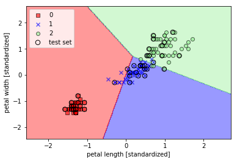
3.3 ロジスティック回帰を使ったクラスの確率のモデリング¶
- パーセプトロンの学習規則は、線形分離できない問題で収束しない
- ロジスティクス回帰を使う
3.3.1 ロジスティック回帰の直観的知識と条件付き確率¶
- 線形分離可能な場合、ロジスティクス回帰は高い性能を発揮する
- 二値分類モデルだが、多クラス分類モデルへ拡張可能
- オッズ比: \(\frac{p}{1-p}\)
- ロジット関数: \(logit(p) = \log\frac{p}{1-p}\)
- 線形関係: \(logit(p(y=1|x)) = {\textbf w}^T{\textbf x} = z\)
- シグモイド関数: \(\phi(z) = \frac{1}{1 + e^{-1}}\)
In [11]:
from matplotlib import pyplot
import numpy
def sigmoid(z):
# float -> float
return 1.0 / (1.0 + numpy.exp(-z))
# plot
z = numpy.arange(-7, 7, 0.1)
phi_z = sigmoid(z)
pyplot.plot(z, phi_z)
# configure chart
pyplot.axvline(0.0, color='k')
pyplot.ylim(-0.1, 1.1)
pyplot.xlabel('z')
pyplot.ylabel('$\phi (z)$')
pyplot.yticks([0.0, 0.5, 1.0])
ax = pyplot.gca()
ax.yaxis.grid(True)
# show
pyplot.show()
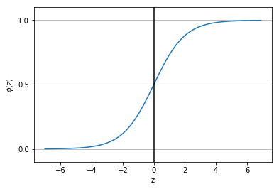
- ロジスティクス回帰では、活性化関数にロジスティクス関数を用いる
- ロジスティクス回帰では、量子化器に単位ステップ関数を用いる
3.3.2 ロジスティック関数の重みの学習¶
- 対数尤度: \(l(w) = \sum_{i \in n}\left[y^{(i)}\log{\phi(z^{(i)}) + (1 - y^{(i)})\log(1 - \phi(z^{(i)}))}\right]\)
- コスト関数: \(J(w) = \sum_{i \in n}\left[-y^{(i)}\log{\phi(z^{(i)}) - (1 - y^{(i)})\log(1 - \phi(z^{(i)}))}\right]\)
3.3.3 scikit-learn によるロジスティック回帰モデルのトレーニング¶
In [12]:
from sklearn.linear_model import LogisticRegression
lr = LogisticRegression(C=1000.0, random_state=0)
lr.fit(X_train_std, y_train)
plot_decision_regions(X_combined_std, y_combined, classifier=lr, test_idx=range(105,150))
pyplot.xlabel('petal length [standardized]')
pyplot.ylabel('petal width [standardized]')
pyplot.legend(loc='upper left')
pyplot.show()
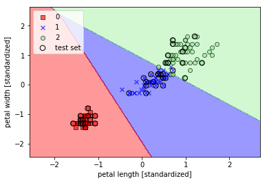
各クラスに分類される確率
In [13]:
lr.predict_proba(X_test_std[0, :].reshape(1, -1))
Out[13]:
array([[ 2.05743774e-11, 6.31620264e-02, 9.36837974e-01]])
3.3.4 正則化による過学習への対処¶
- L2 正則化項をコスト関数に追加する
- L2 正則化関数: \(\frac{\lambda}{2}||w||^2 = \frac{\lambda}{2}\sum_{j \in {\textbf m}}w_j^2\)
- コスト関数: \(J(w) = \sum_{i \in {\textbf n}}\left[-y^{(i)}\log{\phi(z^{(i)}) - (1 - y^{(i)})\log(1 - \phi(z^{(i)}))}\right] + \frac{\lambda}{2}||w||^2\)
- sckit-learn の LogisticRegression に実装されている逆正則化パラメータ: \(C = \frac{1}{\lambda}\)
- sckit-learn の LogisticRegression のコスト関数: \(J(w) = C\sum_{i \in {\textbf n}}\left[-y^{(i)}\log{\phi(z^{(i)}) - (1 - y^{(i)})\log(1 - \phi(z^{(i)}))}\right] + \frac{1}{2}||w||^2\)
In [14]:
weights, params = [], []
for c in range(-5, 5):
lr = LogisticRegression(C=10 ** c, random_state=0)
lr.fit(X_train_std, y_train)
weights.append(lr.coef_[1])
params.append(10**c)
weights = numpy.array(weights)
pyplot.plot(params, weights[:, 0], label='petal length')
pyplot.plot(params, weights[:, 1], linestyle='--', label='petal width')
pyplot.ylabel('weight coefficient')
pyplot.xlabel('C')
pyplot.legend(loc='upper left')
pyplot.xscale('log')
pyplot.show()
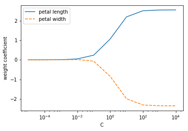
3.4 サポートベクトルマシンによる最大マージン分類¶
- SVM は、パーセプトロンの拡張とみなせる
- SVM は、誤分類率を最小化するのではなく、マージンを最大化する
- サポートベクトルとは、決定境界である超平面と最も近いサンプル
3.4.1 最大マージンを直観的に理解する¶
- マージンが小さいモデルは、過学習に陥りやすい
- マージンが大きいモデルは、汎化誤差が小さくなる傾向にある
- 超平面:
- \(w_0 + w^Tx_{pos} = 1\)
- \(w_0 + w^Tx_{neg} = -1\)
- \(\Rightarrow w^T(x_{pos} - x_{neg} = 2)\)
- 標準化:
- \(||w|| = \sqrt{\sum_{j \in m}w_j^2}\)
- \(\frac{w^T(x_{pos} - x_{neg})}{||w||} = \frac{2}{||w||}\)
- 上式左辺が正負の決定境界の距離であるから、この距離を最大化する
- 最小化問題:
- 制約条件: \(\forall i \in n, y^{(i)}(w_0 + w^Tx^{(i)}) \geq 1\)
- 目的関数: \(\frac{2}{||w||}\) より \(\frac{1}{2}||w||^2\)
3.4.2 スラック変数を使った非線形分離可能なケースへの対処¶
- スラック変数 \(\xi\) は、線形分離不可能なデータのための線形制約緩和のために導入された
- 誤分類を許容して最適化問題を収束させる
- ソフトマージン分類
- 制約条件:
- \(w^Tx^{(i)} \geq 1 - \xi^{(i)} (y^{(i)} = 1)\)
- \(w^Tx^{(i)} \lt -1 + \xi^{(i)} (y^{(i)} = -1)\)
- \(\Rightarrow \frac{1}{2}||w||^2 + C\sum_i\xi^{(i)}\)
- ただし、 \(C\) は誤分類のペナルティを制御するためのパラメータ
In [15]:
from sklearn.svm import SVC
svm = SVC(kernel='linear', C=1.0, random_state=0)
svm.fit(X_train_std, y_train)
plot_decision_regions(X_combined_std, y_combined, classifier=svm,test_idx=range(105,150))
pyplot.xlabel('petal length [standardized]')
pyplot.ylabel('petal width [standardized]')
pyplot.legend(loc='upper left')
pyplot.show()
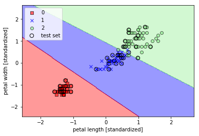
3.4.3 scikit-learn での代替実装¶
Perceptron,LogisticRegressionは LIBLINEAR を使っているSVMは、 LIBSVM を使っている- LIBLINEAR, LIBSVM は、オンメモリで動く
SGDClassifierは、partial_fitメソッドによるオンライン学習をサポートしている
In [16]:
from sklearn.linear_model import SGDClassifier
ppn = SGDClassifier(loss='perceptron')
lr = SGDClassifier(loss='log')
svm = SGDClassifier(loss='hinge')
3.5 カーネルSVM を使った非線形問題の求解¶
線形分離不可能なサンプルデータ生成する
In [17]:
numpy.random.seed(0)
X_xor = numpy.random.randn(200, 2)
y_xor = numpy.logical_xor(X_xor[:, 0] > 0, X_xor[:, 1] >0)
y_xor = numpy.where(y_xor, 1, -1)
pyplot.scatter(X_xor[y_xor==1, 0], X_xor[y_xor==1, 1],
c='b', marker='x', label='1')
pyplot.scatter(X_xor[y_xor==-1, 0], X_xor[y_xor==-1, 1],
c='r', marker='s', label='-1')
pyplot.xlim([-3, 3])
pyplot.ylim([-3, 3])
pyplot.legend(loc='best')
pyplot.show()
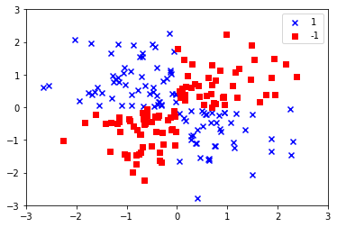
- カーネル法は、線形分離不可能なデータを \(\phi(\cdot)\) で高次元に写像し、線形分離可能にする
3.5.1 カーネルトリックを使って分離超平面を高次元空間で特定する¶
高次元への写像の問題は、計算コストが高いこと
カーネルトリックは、カーネル関数 \(k\) を用いて、像の内積を計算することを避け、計算コストを抑える
\(k(x^{(i)}, x^{(j)}) = \phi(x^{(i)})^T\phi(x^{(j)})\)
もっとも広く使われているカーネル関数の一つが RBF カーネル
\(k(x^{(i)}, x^{(j)}) = \exp\left(-\frac{||x^{(i)} - x^{(j)}||^2}{2\sigma^2}\right) = \exp\left(-\gamma||x^{(i)} - x^{(j)}||^2\right)\)
In [18]:
svm = SVC(kernel='rbf', random_state=0, gamma=0.10, C=10.0)
svm.fit(X_xor, y_xor)
plot_decision_regions(X_xor, y_xor, classifier=svm)
pyplot.legend(loc='upper left')
pyplot.show()
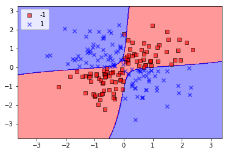
- \(\gamma\) はカットオフパラメータであり、小さくするとトレーニングサンプルの影響力が大きくなり、決定境界がなめらかになる
- \(\gamma\) が大きくなると汎化誤差が生じる可能性が高くなる
In [19]:
svm = SVC(kernel='rbf', random_state=0, gamma=0.2, C=1.0)
svm.fit(X_train_std, y_train)
plot_decision_regions(X_combined_std, y_combined, classifier=svm, test_idx=range(105,150))
pyplot.xlabel('petal length [standardized]')
pyplot.ylabel('petal width [standardized]')
pyplot.legend(loc='upper left')
pyplot.show()
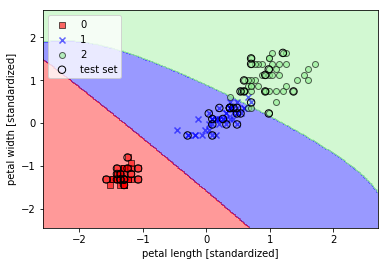
In [20]:
svm = SVC(kernel='rbf', random_state=0, gamma=100.0, C=1.0)
svm.fit(X_train_std, y_train)
plot_decision_regions(X_combined_std, y_combined, classifier=svm, test_idx=range(105,150))
pyplot.xlabel('petal length [standardized]')
pyplot.ylabel('petal width [standardized]')
pyplot.legend(loc='upper left')
pyplot.show()
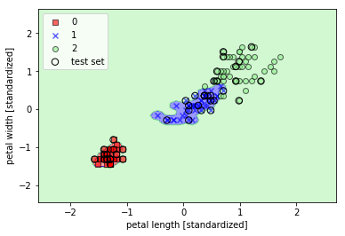
3.6 決定木学習¶
- 意味解釈可能性を配慮する場合に魅力的なモデル
- 木構造の質問に答えることで分類を行う
- 情報利得が最大となる特徴量でデータを分割する
- ノードの情報利得がなくなるまで分割を繰り返す
3.6.1 情報利得の最大化：できるだけ高い効果を得る¶
- 目的関数:
\(IG(D_p, f) = I(D_p) - \sum_{j=1}^{m}\frac{N_j}{N_p}I(D_j)\)
- 特徴量: \(f\)
- 親ノードのデータセット: \(D_p\)
- j 番目の子ノードのデータセット: \(D_j\)
- 親ノードのデータセット: \(N_p\)
- j 番目の子ノードのデータセット: \(N_j\)
- 不純度: \(I\)
- 情報利得は親ノードと子ノードとの不純度の差
- 子ノード不純度が小さいほど情報利得が大きくなる
3.6.2 決定木の構築¶
- 決定木が深くなると決定境界が複雑になり、過学習に陥りやすくなる
In [21]:
from sklearn.tree import DecisionTreeClassifier
tree = DecisionTreeClassifier(criterion='entropy', max_depth=3, random_state=0)
tree.fit(X_train, y_train)
X_combined = numpy.vstack((X_train, X_test))
y_combined = numpy.hstack((y_train, y_test))
plot_decision_regions(X_combined, y_combined, classifier=tree, test_idx=range(105,150))
pyplot.xlabel('petal length [cm]')
pyplot.ylabel('petal width [cm]')
pyplot.legend(loc='upper left')
pyplot.show()
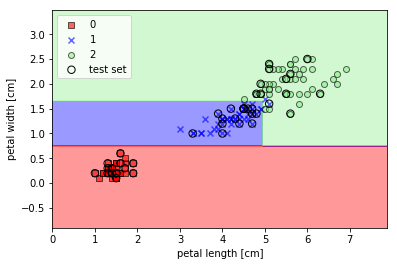
In [25]:
from sklearn.tree import export_graphviz
import pydotplus
from IPython.display import Image
# http://scikit-learn.org/stable/modules/tree.html#classification
dot_data = export_graphviz(tree, out_file=None, feature_names=['petal length', 'petal width'])
graph = pydotplus.graph_from_dot_data(dot_data)
Image(graph.create_png())
Out[25]:
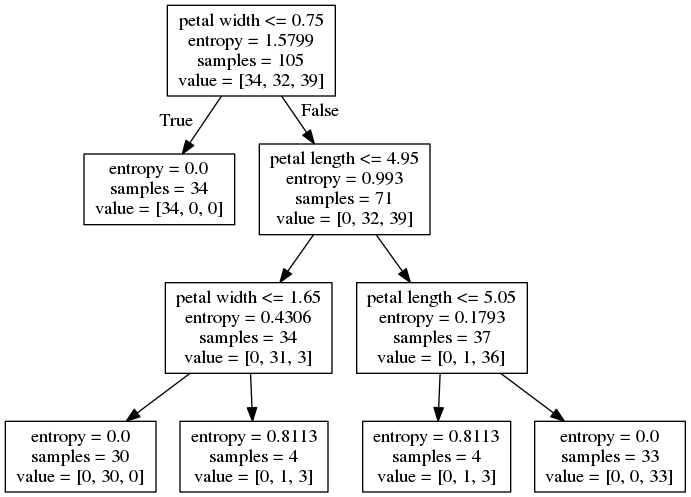
3.6.3 ランダムフォレストを使って弱い学習アルゴリズムと強い学習アルゴリズムを結合する¶
- 分類性能が高い
- スケーラビリティに優れている
- 使いやすい
- 決定木ほどの意味解釈可能性はない
- ハイパーパラメータの設定にそれほど悩まない
- 個々の決定木のノイズに強い
- 決定木の「アンサンブル」
- 手順
- 大きさ n のブートストラップ標本をランダムに復元抽出
- ブートストラップ標本から決定木を成長させる
- ステップ 1, 2 を \(k\) 回くりかえす
- 決定木ごとの予測から多数決でラベルを決定する
- ハイパーパラメータ
- ブートストラップ標本の大きさ \(n\): \(n\) を大きくしすぎると過学習に陥る可能性がある
- 分割ごとの特徴量個数 \(d\): 教師データの特徴量の個数 \(m\) より小さい必要があり、 scikit-learn でのデフォルト値は \(\sqrt{m}\)
In [27]:
from sklearn.ensemble import RandomForestClassifier
forest = RandomForestClassifier(criterion='entropy', n_estimators=10, random_state=1, n_jobs=2)
forest.fit(X_train, y_train)
plot_decision_regions(X_combined, y_combined, classifier=forest, test_idx=range(105,150))
pyplot.xlabel('petal length [cm]')
pyplot.ylabel('petal width [cm]')
pyplot.legend(loc='upper left')
pyplot.show()
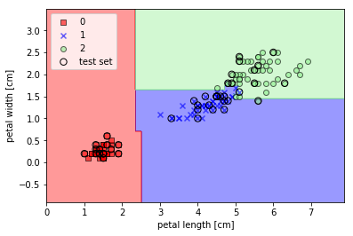
3.7 k 近傍法：怠惰学習アルゴリズム¶
- 怠惰学習
- メモリベース
- バイアスとバリアンスのバランス
- \(k\) を適切に選択する
- 特徴量に適した距離関数を選択する
- ステップ
- 距離関数を選択する
- 分類するサンプルから距離が違い \(k\) 個の教師データを見つける
- 多数決でラベルを決定する
- 利点
- 教師データを集めればすぐに分類器が適応する
- 欠点
- 教師データのサンプル数に比例して計算量が増大する
- 教師データが大きいと必要とする記憶領域が増大する
In [28]:
from sklearn.neighbors import KNeighborsClassifier
knn = KNeighborsClassifier(n_neighbors=5, p=2, metric='minkowski')
knn.fit(X_train_std, y_train)
plot_decision_regions(X_combined_std, y_combined, classifier=knn, test_idx=range(105,150))
pyplot.xlabel('petal length [standardized]')
pyplot.ylabel('petal width [standardized]')
pyplot.legend(loc='upper left')
pyplot.show()
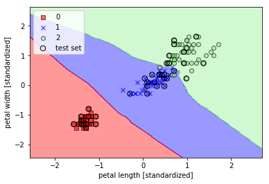